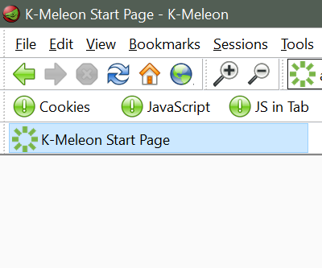

High Resolution
High Resolution is a skin (or theme) for K-Meleon. It uses the same excellent icons from Lim Chee Aun's Phoenity Aura project that K-Meleon uses by default. High Resolution expands the browser's default skin to display better on higher resolution monitors and systems with scaling enabled. It will work on K-Meleon version 75 and up. To use this theme:
-
Download the .zip file below.
-
Extract the .zip file and place the HighResolution folder in your K-Meleon/skins/ folder or profile/skins/ folder.
-
Open K-Meleon and press F2 to open the preferences window. Choose the HighResolution skin and set your toolbar size.
-
Restart K-Meleon for changes to take affect.
This skin was specifically designed to help users and desginers who wish to create skins for K-Meleon. You can open the .cfg or .txt files in any text editor. You'll find comments explaining how the skin works and even instructions on how to create new toolbars. The skin is provided "AS IS" but you are welcome to visit the K-Meleon forums if you have any questions.
Download High Resolution
Screenshots
Links

↑ K-Meleon Tools Home ↑
The High Resolution theme for K-Meleon was assembled by R.J.J. III, Copyright © 2022. All original images were created for Phoenity Aura by Lim Chee Aun Copyright © 2015. Both the Phoenity Aura icons and this theme are made available under the Creative Commons Attribution-Share Alike 3.0 and GNU Lesser General Public License.
{kind=link}
{kind=link}